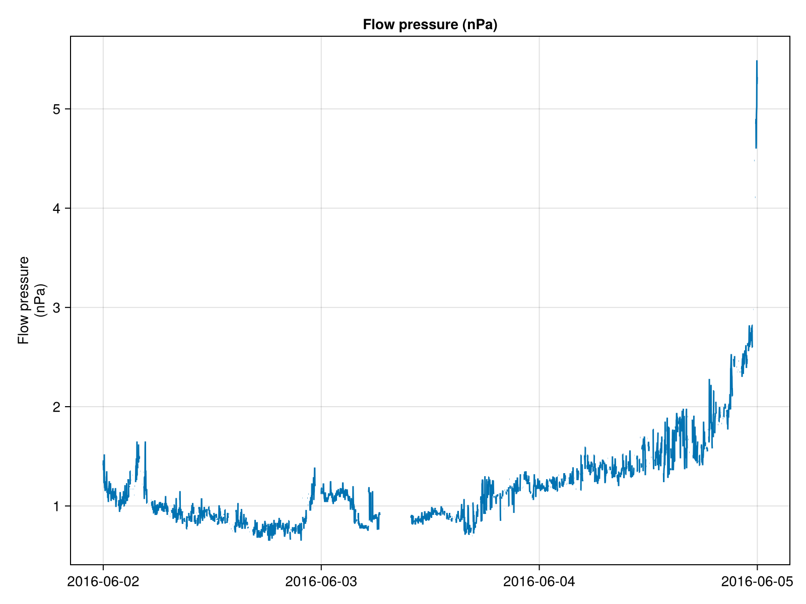
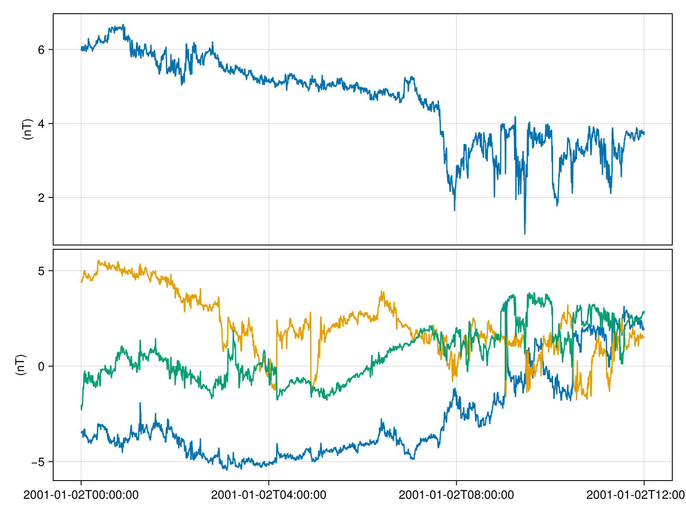
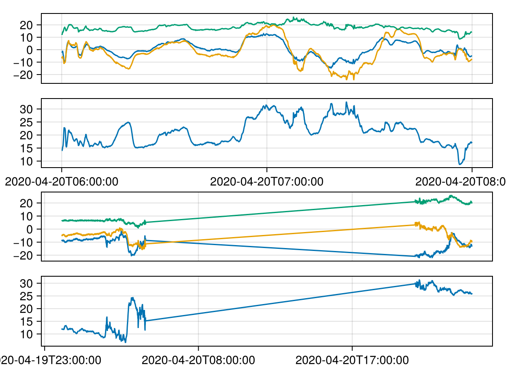

Quickstart
We provide a few ways to load data, please see Data for a detailed explanation of the data formats and retrieval methods.
Get data with Speasy
Speasy.jl provides functions to load data from main Space Physics WebServices (CDA,SSC,AMDA,..).
It could be installed using using Pkg; Pkg.add("Speasy").
using Speasy: get_data
using CairoMakie, SpacePhysicsMakie
# da = get_data("amda/imf", "2016-6-2", "2016-6-5")
da = get_data("cda/OMNI_HRO_1MIN/Pressure", "2016-6-2", "2016-6-5"; sanitize=true)SpeasyVariable{Float32, 2}: Pressure
Time Range: 2016-06-02T00:00:00 to 2016-06-04T23:59:00
Units: nPa
Size: (4320, 1)
Memory Usage: 85.365 KiB
Metadata:
FIELDNAM: Flow pressure
VALIDMIN: Any[0.0]
VALIDMAX: Any[100.0]
SCALEMIN: Any[0.0]
SCALEMAX: Any[100.0]
UNITS: nPa
FORMAT: F5.2
FILLVAL: Any[99.98999786376953]
VAR_TYPE: data
CATDESC: Flow pressure (nPa)
VAR_NOTES: Derived parameters are obtained from the following equations. Flow pressure = (2*10**-6)*Np*Vp**2 nPa (Np in cm**-3, Vp in km/s, subscript p for proton)
DISPLAY_TYPE: time_series
DEPEND_0: Epoch
LABLAXIS: Flow pressure
BIN_LOCATION: 0.0Plot the data
tplot(da)
Get data using Heliophysics Application Programmer's Interface (HAPI)
HAPIClient.jl provides functions to load data from HAPI-compliant servers.
It could be installed using using Pkg; Pkg.add("HAPIClient").
using HAPIClient: get_data
da = get_data("CDAWeb/AC_H0_MFI/Magnitude,BGSEc", "2001-1-2", "2001-1-2T12")HAPIClient.HAPIVariables{@NamedTuple{Magnitude::HAPIClient.HAPIVariable{Float64, 1, Vector{Float64}, Vector{Dates.DateTime}}, BGSEc::HAPIClient.HAPIVariable{Float64, 2, Matrix{Float64}, Vector{Dates.DateTime}}}, Dict{String, Any}}((Magnitude = Magnitude [Time Range: 2001-01-02T00:00:15 to 2001-01-02T11:59:58, Units: nT, Size: (2700,)], BGSEc = BGSEc [Time Range: 2001-01-02T00:00:15 to 2001-01-02T11:59:58, Units: nT, Size: (2700, 3)]), Dict{String, Any}("stopDate" => "2025-05-29T23:59:58Z", "resourceURL" => "https://cdaweb.gsfc.nasa.gov/misc/NotesA.html#AC_H0_MFI", "uri" => URI("https://cdaweb.gsfc.nasa.gov/hapi/data?time.min=2001-01-02T00%3A00%3A00.000Z¶meters=Magnitude%2CBGSEc&format=csv&id=AC_H0_MFI&time.max=2001-01-02T12%3A00%3A00.000Z"), "parameters" => Any[Dict{String, Any}("length" => 24, "name" => "Time", "units" => "UTC", "fill" => nothing, "type" => "isotime"), Dict{String, Any}("units" => "nT", "name" => "Magnitude", "fill" => "-1.0E31", "description" => "B-field magnitude", "type" => "double"), Dict{String, Any}("units" => "nT", "name" => "BGSEc", "size" => Any[3], "fill" => "-1.0E31", "description" => "Magnetic Field Vector in GSE Cartesian coordinates (16 sec)", "type" => "double")], "startDate" => "1997-09-02T00:00:12Z", "status" => Dict{String, Any}("message" => "OK", "code" => 1200), "HAPI" => "2.0", "contact" => "N. Ness @ Bartol Research Institute"))Plot the data
using CairoMakie, SpacePhysicsMakie
tplot(da)
Get data with PySPEDAS
PySPEDAS.jl provides a Julia interface to the PySPEDAS Python package, offering a similar API for Julia users to utilize the existing Python routines.
It could be installed using using Pkg; Pkg.add("https://github.com/JuliaSpacePhysics/PySPEDAS.jl").
using SpacePhysicsMakie: tplot
using PySPEDAS.Projects
using DimensionalData
using CairoMakie
da = themis.fgm(["2020-04-20/06:00", "2020-04-20/08:00"], time_clip=true, probe="d");
keys(da)
# Same as more verbose `pyspedas.projects.themis.fgm(...)`(:thd_fgs_btotal, :thd_fgs_gse, :thd_fgs_gsm, :thd_fgs_dsl, :thd_fgl_btotal, :thd_fgl_gse, :thd_fgl_gsm, :thd_fgl_dsl, :thd_fgl_ssl, :thd_fgh_btotal, :thd_fgh_gse, :thd_fgh_gsm, :thd_fgh_dsl, :thd_fgh_ssl, :thd_fge_btotal, :thd_fge_gse, :thd_fge_gsm, :thd_fge_dsl, :thd_fge_ssl)Plot the data
f = Figure()
tplot(f[1,1], [da.thd_fgs_gsm, da.thd_fgs_btotal])
tplot(f[2,1], [DimArray(da.thd_fgl_gsm), DimArray(da.thd_fgl_btotal)])
f